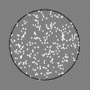
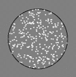
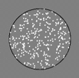

In this block, you will complete 30 trials paired with another
participant. You are free to select the order in which you complete
the different dot motion difficulties, although you cannot complete
one that your partner is completing, or has already completed. Each
trial will last 6 seconds, with a 6 second break in between trials.
Remember to select the difficulty by clicking, and responding with "Z"
for left and "X" for right. Be careful of the 500ms incorrect penalty!
Please try and complete each trial as quickly and accurately as possible.
Please press enter to begin the block.
In this experiment, you will be asked to select an image displaying a number of dots moving on the screen. Within this image, some of the dots will be moving in the same direction (either left or right) and others will be moving in a random direction. Your task is to identify the direction in which the majority of the dots are moving. This will vary from very easy, where many of the dots are moving in the same direction, to very difficult, where only a few dots are moving in the same direction, responding as quickly and accurately as you can.
There are two blocks consisting of 30 trials 6 seconds in length, 60
trials in total. In one block you will perform this by yourself, and
in the other you will be paired with another participant.
The experiment will take roughly 30 minutes to complete.
During the experiment you will encounter several instruction pages
where you can take your time to read them, requiring you to press
enter to continue.
While we encourage you to take your time to read and understand these
instructions, we also encourage you to consider the other person
completing the experiment with you
and respect their time.
We appreciate your participation.
Please press enter to view the practice instructions.
In this block, you will complete 10 trials, 5 by yourself and 5 with
your partner. You are free to select the order in which you complete
the different dot motion difficulties.
Initially, the trials will be 12 seconds with a 12 second break. Later
it will switch to 6 second trials with a 6 second break, matching the
experiment.
Here, you will use the mouse to select a task by clicking on it, then
respond with either "Z" for left or "X" for right when you think you
know which direction the dots are moving.
If you respond incorrectly, there will be a 500ms delay before you can
respond again. Tasks you have completed, or that your partner has
completed, will be greyed out.
Please try and complete each task as quickly and accurately as
possible.
Please press enter to begin the practice block.
In this block, you will complete the 30 trials by yourself. You are
free to select the order in which you complete the different dot
motion difficulties. Each trial will last 6 seconds, with a 6 second
break in between trials.
Remember to select the difficulty by clicking, and responding with "Z"
for left and "X" for right. Be careful of the 500ms incorrect penalty!
Please try and complete each trial as quickly and accurately as
possible.
Please press enter to begin the block.
Congratulations! You have now completed the experiment, we appreciate your participation.
Your participation in this experiment is facilitating an investigation
into how people make decisions and schedule tasks both by themselves
and in a team environment. We aim to investigate how and why people
deviate from the "optimal" decision making process. For example, in
the task you just completed, the optimal strategy to get the most
reward for time invested was to complete each task from easiest to
hardest. Why do people deviate from this strategy, and how do they
progress to this strategy (or something close to it) as the task
continues? How is this process different for those operating by
themselves versus with a partner? These are the questions and
processes we wish to investigate.
If you would like more information or have any questions, please
contact Luke Russell at:
LRussell1@uon.edu.au
Thank you for your time and participation. This connection will close in 2 minutes, and you will be redirected.
Or, press enter to complete the experiment and return to either Prolific or SONA.